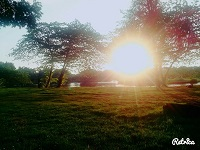
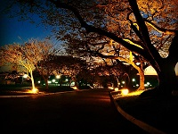

O que eu mais gosto em Santa Barbára D´Oeste
Comer no Rancho da Costela

Um restaurante típico de fazenda. Além da consagrada costela "Mais Caminhos“, ofertamos deliciosos pratos,sobremesas,café premium e chopp de qualidade. Tudo isso em um ambiente campestre, sereno e acolhedor. Em atividade desde 1996.
Conheça mais sobre o Rancho da Costela visitando sua página no Facebook.
Fazer um piquenique no Parque dos Ipês
Tanto no fim de tarde quanto aos finais de semana o Parque dos Ipês é sempre um bom local para passar um tempo com a família.
Descubra mais sobre o Parque dos Ipês pesquisando no Google.sobre o local.
Caminhar no Caminho dos Flamboyants
Se exercitar é sempre algo recomendável, ainda mais se for em um local agradável e perto da natureza.
Veja no mapa aonde fica esse local.